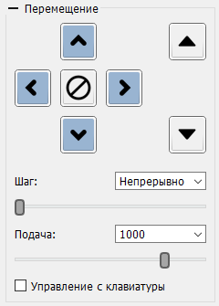

На панели "Перемещение" находятся элементы управления движением инструмента ЧПУ, а именно:
Списки "Шаг" и "Подача" имеют предварительные наборы шагов перемещения и скоростей соответственно, но позволяют ввести произвольные значения в поля списков. Введенные значения запоминаются при включении флага "Управление с клавиатуры" и могут выбираться из списков при последующем запуске программы.
Каждой кнопке панели, а также перелистыванию значений "Шаг" и "Подача" могут быть назначены быстрые клавиши, задаваемые в окне "Настройки" программы. Управление данными клавишами включается флагом "Управление с клавиатуры".